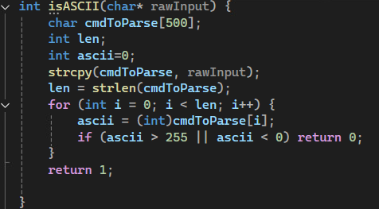
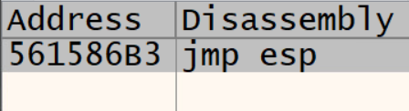

Scenario and boundaries
The target was FMLServer, compiled as a 32-bit Debug build and running on a Windows VM. I analyzed the process with x32dbg while a Kali Linux VM sent test data over TCP port 8421. Python handled payload delivery, and Metasploit tooling generated and received the final lab reverse connection.
This was an intentionally vulnerable environment. DEP, ASLR, stack protections, Windows Firewall, and real-time malware protection were disabled or relaxed so the exercise could isolate the mechanics of a classic stack overflow. The technique is not presented as representative of a normally hardened Windows system.
Root cause
The vulnerable isASCII() function accepted raw network input and copied it into char cmdToParse[500] with strcpy(). Because strcpy() copies until a null terminator and has no destination-length parameter, input longer than the buffer continued into local variables, the saved base pointer, and the saved return address.

Establishing control of EIP
I first approximated the stack layout from the 500-byte buffer, two local integers, saved EBP, and saved EIP. I then sent marker-based payloads and observed register state in x32dbg. Seeing marker bytes appear in EIP proved that the network input controlled the saved return address; the final layout placed the replacement address after 512 padding bytes and four additional marker bytes.
To redirect execution, I searched the target module for a stable jmp esp instruction. The debugger identified address 0x561586B3, encoded in little-endian order inside the Python payload.

Payload construction
The final Python script opened a TCP socket to the server and assembled the payload in four parts. I excluded null and newline bytes from the generated x86 payload because either could terminate or disrupt the server’s string-processing path.
| Component | Purpose |
|---|---|
| Padding and markers | Reach the saved return address at the confirmed offset |
| JMP ESP address | Replace EIP and redirect execution to stack-controlled data |
| 32-byte NOP sled | Provide a tolerant landing region before the generated bytes |
| x86 reverse payload | Establish the controlled callback to the Kali handler |
Result
When the vulnerable function returned, the overwritten address was loaded into EIP. The selected instruction redirected execution to ESP, which advanced through the NOP sled and into the generated bytes. The reported result was a Meterpreter reverse TCP session from the Windows server process to the listener on the Kali VM, demonstrating remote code execution inside the lab.
Mitigation analysis
The direct fix is at the source: reject oversized input before copying and replace the unbounded copy with an explicitly bounded operation. Validation must occur before data enters the destination buffer, not after corruption has already happened.
- Stack cookies (/GS) detect corruption before the function uses an overwritten return address.
- DEP marks the stack non-executable, preventing this payload from running directly from injected stack bytes.
- ASLR makes a fixed control-transfer address unreliable between executions.
- Firewall, endpoint protection, and least exposure reduce access to the vulnerable service and improve detection.